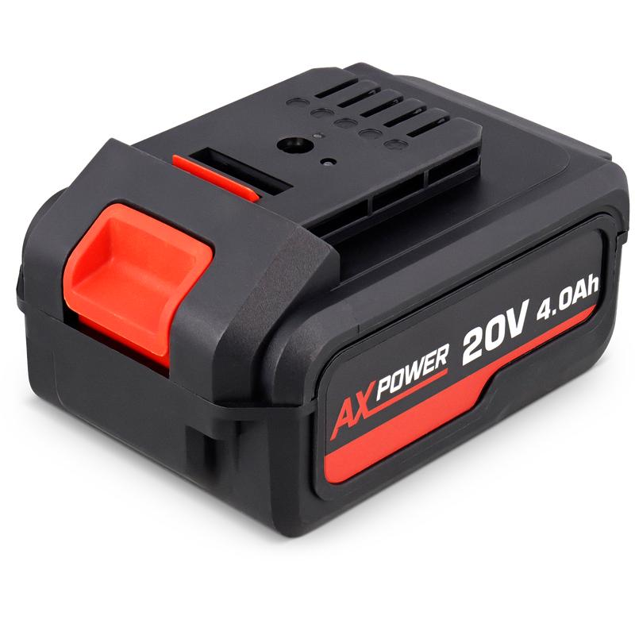
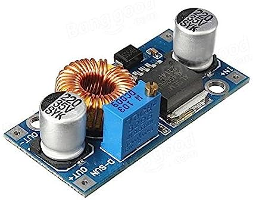
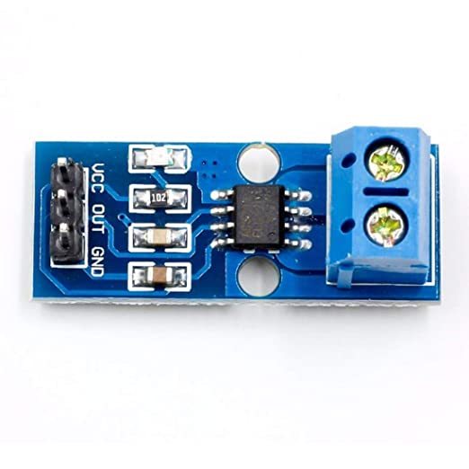

3.6.1. Source d’alimentation¶
Apres une mauvaise experience avec les baterie LIPO deja presente au club, nous avons fait le choix de changer de source d’alimentation pour les robot. Nous nous sommes inspirer de ce que nous avons pu voir lors de la coupe de france de robotqiue et nous avons opter pour des batterie de perceuse. toujours dans le but de faire des economie nous avons achetr ceux disponible chez action.
Afin de recuperer l’energie des batterie nous avons creer notre propre adapteur pour la batterie
nous asssurons desormais d’avoir une source d’energie fiable, facilement et rapidement rechargeable
{kind=link}
3.6.2. Carte d’alimentation¶
3.6.2.1. Conversion¶
Le robot est composer de plusieurs type de carte et de composant ces derniers sont soit alimenter en 5V, 7V ou 12V, nous avons donc besoin de reduire la tension de la baterie a ces differents dont nous avons besoin. il existe plusieurs moyen de reduire la tension, les regulateur de tension lineaire type L7805CV en sont capables, en revanche ces derniers ne sont pas reglable est ne surporte pas toujours les besoins en courant. Nous somme tourner vers une autre soltuion les buck-converter type lm2596, ces derniers surporte les gros courant et la tension de sortie peut etre regler ce qui est un bon avantage si on souhaite changer l’un des niveaux de tension ou s’en reservir sur d’autre projet Pour nos besoin nous avons besoin de converter avec une limite de 5A pour le moteurs en 12V, les module de 3A suffiront pour le 5V et le 7V
{kind=link}

3.6.2.2. Protection¶
trois type de protection on ete ajouter a la carte d’alimentation.
la premiere est un simple bouton d’arret urgence qui est ajouter en serie de l’alimentation. Le reglement de la competition oblige la presence d’un bouton d’arret du’rgence d’un diametre d’au mooins 20mm. par ailleur ce dernier nous permet d’arreter rapidement le robot en cas de probleme le bouton d’alimentation etant difficile a atteindre (mais joli)
La seconde est une protection contre les cours circuit, un fusible a ete ajouter en amont de chaque de buck-converter. ce dernier fondera dans le cas d’un courant supperieur a la capacite du buck converter pour les protefer ou d’un courant excessivement grand dans le cas d’un cours circuit pour limiter les degats sur le reste du systeme
enfin la derniere protection est un diode anti retour placer en ammont du buck-converter qui alimente les moteurs des roues. en effet les moteurs pas a pas agissent comme generatrice lors que le robot est hors tension et que l’on bouge ce dernier, la tension generer est alors renvoyer dans la carte d’alimentation, traverse dans le mauvais sens le buck converter 12v puis part alimenter les deux autres convertisseur. cela a pour effet de faire booter en sous alimentation la pi et les autres cartes arduino ce qui n’est pas bon pour ces cartes. pour palier a ca, la diode d’anti retour emepechera la tension generer de poursuivre son chemin apres avoir traverser le buck converter de 12V et n’alimentera donc pas le reste du circuit Attention les moteur pas a pas consome beaucoup de courant, la diode anti-retour doit etre correctement dimmensionner, dans notre cas, la diode resiste a 6A
3.6.2.3. Mesure de Tension¶
La tension de la batterie est image de son niveau de charge, en effet cette derniere delivre une tension de 20.5V a pleine charge et descent jusqu’a 16.5V avant d’arreter de delivrer du courant. nous avons donc besoin d’un retour du niveau de tension de la batterie. Pour cela nous mettons en place un pont diviseur de tension d’un rapport de 5 avec une resistance de 10K et 40K, ainsi la tension au borne de la resistance de 10k est 5x inferieur a celle de la batterie et evoluera donc entre 4.1V et 3.3V. cette tension peut etre mesurer par un port analogique de l’arduino Uno avant d’etre remonter par liaison serie a la pi pour etre publier sur un topic et afficher sur l’ecran LCD pour nous permettre de surveiller
3.6.2.4. Mesure du Courant¶
Afin de nous assurer que le courant conssomer par le robot est correct nous avons fait le choix d’integrer un module de mesure du courant, le ACS712. Le module en question est ajouter en serie de l’alimentation sur la carte. Une fois la mesure relever par l’arduino uno, cette derniere est ensuite renvoyer par liaison serie a la pi afin de l’afficher sur l’ecran LCD et de le publier sur les topic ros2.
Le module de mesure de courant s’est averer etre tres compliquer a lire, instable et inutile. ce module ne sera pas a conserver.
{kind=link}
Le pcb a ete designer grace a KiCad et a ete realiser sur la CIF
3.6.2.5. Le shema electrique¶
{kind=link}
3.6.2.6. Le PCB¶